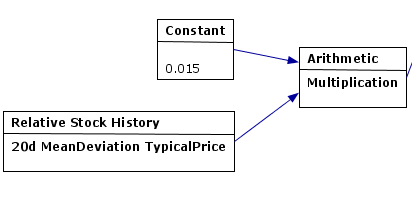

- Home
- ·
- Download
- ·
- Features
- ·
- Indicators
- ·
- Testimonial
- ·
 English
English 中文
中文Moving Average Convergence Divergence
Relative Strength Index
Money Flow Index
Commodity Channel Index
Doji

{kind=link}
Introduction
The Commodity Channel Index (CCI) is often used for detecting divergences from price trends as an overbought/oversold indicator, and to draw patterns on it and trade according to those patterns. In this respect, it is similar to bollinger bands, but is presented as an indicator rather than as overbought/oversold levels.
Formula
CCI = (Typical Price - SMATP) / (0.015 x Mean Deviation)
Typical Price (TP) = (H+L+C)/3 where H = high, L = low, and C = close.
SMATP = Simple Moving Average of the Typical Price.
Mean Deviation = First, calculate the absolute value of the difference between the last period's SMATP and the typical price for each of the past 20 periods. Add all of these absolute values together and divide by 20 to find the Mean Deviation.
Interpretation
CCI can be used to identify oversold levels. A security would be deemed oversold when the CCI dips below -100. From oversold levels, a buy signal might be given when the CCI moves back above -100. A security would be deemed overbought when it exceeds +100. From overbought levels, a sell signal might be given when the CCI moved back below +100.
Case Study
Not at this moment.
Final Note
There is no exact right period for CCI. User shall experiment with various time period, according to current market condition.
Reference